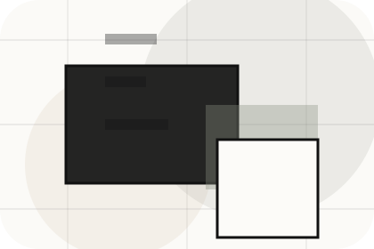
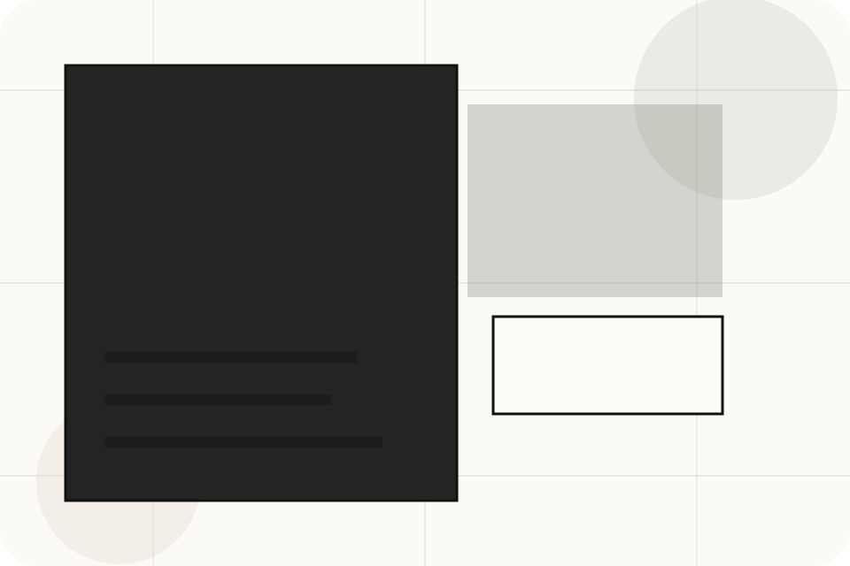
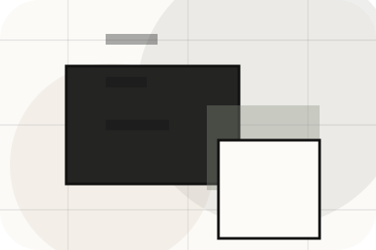
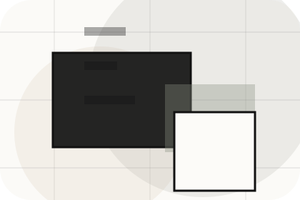
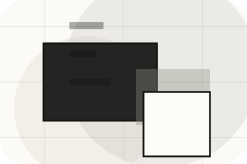
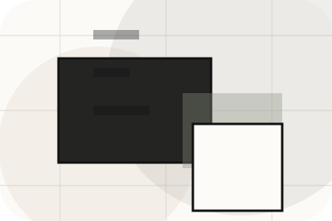
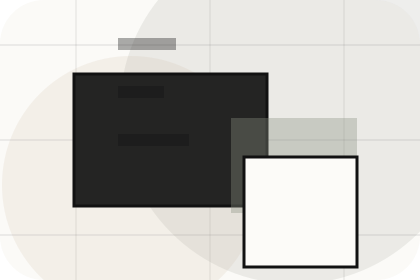
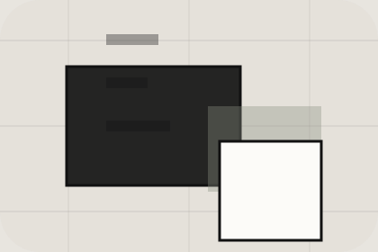

Context
Neighbourhoods gives the page a specific angle instead of repeating the navigation label.
Areas / 01
Areas opens as a clear real estate decision hub: what Urban offers, who it helps, why it matters, and which route to take first.
The first screen combines positioning, proof, primary action, and fast internal navigation, so people can act immediately or compare the rest of the areas route with context.
Architectural listing hero
Select the closest route and Urban keeps the next step, proof, and follow-up expectation aligned with market confidence and discovery.

Areas / 02
Locations makes the contact path concrete: what to send, how the response works, and what Urban needs before visitors get a valuation.
The section reduces contact friction by naming the channel, expected detail, privacy path, and response expectation instead of dropping visitors into a generic form.
Explore AreasUrban keeps locations practical: send the key details, choose the right contact route, and know what kind of reply to expect.
Get ValuationAreas / 04
Prices makes commercial comparison easier by showing fit, scope, and terms before real estate visitors ask for the next step.
The layout keeps price-sensitive decisions honest: it separates starting scope, fuller delivery, and ongoing support so the visitor can ask a sharper question.
Explore AreasWho the offer is for, which scope it suits, and when a different route may be better.
What is included clearly enough for real estate, property & land services visitors to compare value without hidden jargon.

The practical details that should be confirmed before someone asks to get a valuation.
Areas / 05
Lifestyle adds professional context to the areas route, using the minimal property journal structure to support market confidence and discovery before visitors choose a next step.
Urban uses thin-rule listing cards and focused copy to make the decision easier to scan, aligning the section with market confidence and discovery rather than filling space.
Explore AreasLifestyle gives the page a specific angle instead of repeating the navigation label.
The thin-rule listing cards show what to compare, what to avoid, and what matters most for real estate, property & land services visitors.
The final cue points to a useful internal route so the section keeps the journey moving.
Areas / 06
Schools adds professional context to the areas route, using the minimal property journal structure to support market confidence and discovery before visitors choose a next step.
Urban uses thin-rule listing cards and focused copy to make the decision easier to scan, aligning the section with market confidence and discovery rather than filling space.
Explore AreasSchools gives the page a specific angle instead of repeating the navigation label.
The thin-rule listing cards show what to compare, what to avoid, and what matters most for real estate, property & land services visitors.
The final cue points to a useful internal route so the section keeps the journey moving.
Areas / 07
Transport adds professional context to the areas route, using the minimal property journal structure to support market confidence and discovery before visitors choose a next step.
Urban uses thin-rule listing cards and focused copy to make the decision easier to scan, aligning the section with market confidence and discovery rather than filling space.
Explore AreasUrban structures transport around context, judgment, and a clear next route so visitors can compare the block quickly before they get a valuation.
Get ValuationAreas / 08
Maps adds professional context to the areas route, using the minimal property journal structure to support market confidence and discovery before visitors choose a next step.
Urban uses thin-rule listing cards and focused copy to make the decision easier to scan, aligning the section with market confidence and discovery rather than filling space.
Explore Areas

Maps gives the page a specific angle instead of repeating the navigation label.
Areas / 09
Tips adds professional context to the areas route, using the minimal property journal structure to support market confidence and discovery before visitors choose a next step.
Urban uses thin-rule listing cards and focused copy to make the decision easier to scan, aligning the section with market confidence and discovery rather than filling space.
Explore AreasTips gives the page a specific angle instead of repeating the navigation label.

The thin-rule listing cards show what to compare, what to avoid, and what matters most for real estate, property & land services visitors.

The final cue points to a useful internal route so the section keeps the journey moving.
Areas / 10
Urban closes the areas route with a clear action, a quick reminder of the value, and a low-friction way to get a valuation.
Visitors who are ready can use the primary action. Visitors who are still comparing can scan the section links, proof, and support routes before they get a valuation.
Get ValuationThe final block keeps the choice simple: act now, compare one more proof route, or send enough detail for a focused response.
Get Valuationmarket confidence and discovery
A real-estate editorial site with architecture-led listings, sparse navigation, area guides, and valuation flow. Areas ends with a direct path to get a valuation, plus enough context for visitors who still need to compare.

Get ValuationInformation is provided for planning and should be reviewed for the final client, location, and operating rules.